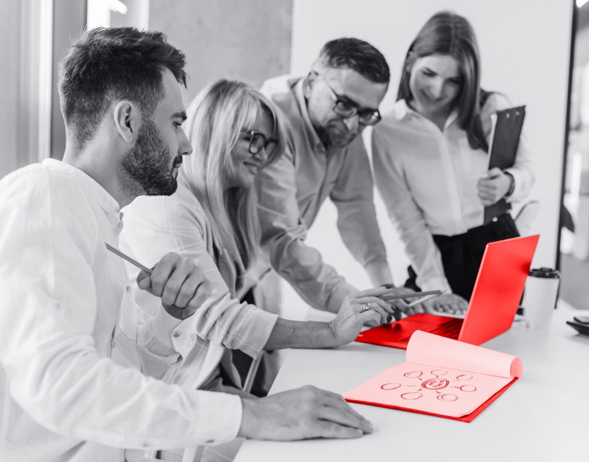

1
Map the client journey
Review onboarding, proposal routing, compliance checks, and reporting handoffs with Product and Client Experience teams.
Prepared for Kim Estrada
Saw Cayuse is hiring a BDR and technical lead. That points to growth on both sides: more new conversations, and more need to keep the research platform smooth.
Cayuse is widening sales motion while strengthening product delivery. That usually means more demos, more onboarding, and more urgent asks from research teams. The hard part is keeping Sponsored Projects, Proposals, compliance, and reporting flows stable as volume grows. If small sync or workflow issues stay open, Client Experience feels them first through support, training, and renewal risk.
One focused team supports Cayuse product work without adding hiring delay.
Review onboarding, proposal routing, compliance checks, and reporting handoffs with Product and Client Experience teams.
Pick the highest-friction flow and ship fixes in a six-week pilot with weekly demos.
Automate multi-user editing, routing, status changes, and integration checks before each release.
Tighten task labels, empty states, alerts, and handoffs so research teams need less training.

Elinext improved stability, scale, and QA automation for regulated document workflows.
Read case study
Elinext built automated regression checks for a SaaS platform with frequent releases.
Read case study